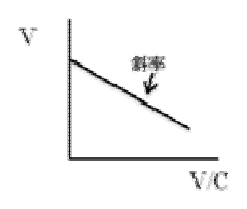
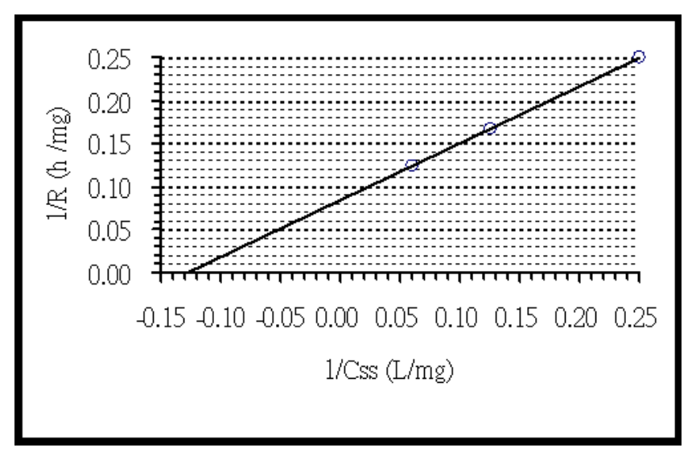

104 年第 2 次藥師藥劑學與生物藥劑學試題與答案
這一頁是民國 104 年第 2 次藥師藥劑學與生物藥劑學的整份歷屆試題，共 80 題，題目與標準答案出自考選部「國家考試試題及測驗式試題答案」開放資料。以下逐題列出題幹、選項與答案；要計時作答或記錄成績，請用線上練習。
考選部原始場次代碼：104090
線上作答這一科 →
全部 80 題
第 1 題
某一藥物之降解遵循第一階次（first order）動力學過程，請問其半衰期（t1/2）及第一階次速 率常數（k）之間的關係為何？
- （A）t1/2 = 0.693/k
- （B）t1/2 = k/0.693
- （C）t1/2 = 1/2 (C/k)
- （D）t1/2 = 1/2 (k/C)
答案：（A）
第 2 題
根據藥典定義，percent weight in volume 的正確單位表示為：
- （A）mg/100 mL
- （B）mL/100 mg
- （C）g/100 mL
- （D）mL/100 g
答案：（C）
第 3 題
下列有關以蔗糖製成的糖漿劑之敘述，何者為正確？
- （A）當蔗糖濃度於65% w/w時，則需添加防腐劑
- （B）糖漿劑中的蔗糖經水解後的轉化糖溶液甜度會增高
- （C）糖漿劑中的蔗糖經水解後的轉化糖溶液較不易發酵
- （D）糖漿劑若有發生沉澱時，仍可繼續使用
答案：（B）
第 4 題待校
在糖漿劑中，下列何者可用葡萄糖替代蔗糖，以減少褪色及焦化作用？
- （A）Prunum syrup
- （B）Tolu balsam syrup
- （C）Ferrous sulfate syrup
- （D）Hydriodic acid syrup
答案：（D）
第 5 題
依藥典規定，製備粉狀「顛茄浸膏」時，宜先以滲漉法抽提生藥，將滲漉液減壓濃縮後，再 調整其含量，而在稀釋時，不宜使用何種粉末？
- （A）乳糖
- （B）蔗糖
- （C）甘草粉
- （D）碳酸鎂
答案：（D）
第 6 題
中華藥典第七版中有關甘草流浸膏與甘草浸膏的比較，以下敘述何者正確？
- （A）二者皆以沸水為浸溶劑
- （B）二者皆加入氨水以中和酸性
- （C）甘草浸膏的甘草苷含量較低
- （D）甘草流浸膏的乙醇含量較高
答案：（D）
第 7 題
某藥品於25℃時，溶質1 g或1 mL能溶於溶劑100～1000 mL中，其溶解度依藥典所用之術語 為何？
- （A）可溶（soluble）
- （B）易溶（freely soluble）
- （C）微溶（slightly soluble）
- （D）略溶（sparingly soluble）
答案：（C）
第 8 題
下列有關「phenobarbital elixir之製備」的敘述中，何者較正確？
- （A）1克phenobarbital無法完全溶解於5 mL冷水中後，故宜加熱助溶
- （B）宜先將phenobarbital溶於加熱之甘油後，再趁熱以水稀釋
- （C）宜將phenobarbital直接溶解於水和甘油之混合溶劑中
- （D）甘油有助於phenobarbital溶於酒精溶液中
答案：（D）
第 9 題
下列乳化劑何者降低表面張力的能力最差？
- （A）Acacia
- （B）Polysorbate
- （C）Potassium laurate
- （D）Sorbitan monooleate
答案：（A）
第 10 題
下列何種溶液之性質在CMC時會突然變小？
- （A）擴散係數
- （B）黏稠度
- （C）混濁度
- （D）對溶解度低的化合物之溶解度
答案：（A）
第 11 題
Sorbitan monolaurate屬於下列何種界面活性劑？
- （A）非離子性
- （B）陽離子性
- （C）陰離子性
- （D）兩性
答案：（A）
第 12 題
當水的表面張力是72 dyne/cm，對臨界表面張力是46 dyne/cm的固體形成的接觸角為70度， 在水中添加下列溶劑使水恰能完全濕潤該固體，依Traube’s rule，下列何者同體積所需濃度 最低？
- （A）乙醇
- （B）丙醇
- （C）丁醇
- （D）戊醇
答案：（D）
第 13 題
利用滲透壓儀器測量，並以π/C（Y軸）對溶質濃度（C）（X軸）作圖之斜率為>0時，代表 溶質與溶媒之間何種力量較大？
- （A）排斥力
- （B）吸引力
- （C）凡得瓦爾力
- （D）滲透力
答案：（B）
第 14 題
下列明膠製劑何者有最高凝膠化溫度？
- （A）10% Type B gelatin於pH10之水溶液
- （B）20% Type B gelatin於pH9之水溶液
- （C）30% Type A gelatin於pH5之水溶液
- （D）30% Type A gelatin於pH8之水溶液
答案：（D）
第 15 題
下列何者一個微膠體（micelle）所含界面活性劑分子最多？
- （A）n-C10H21N(CH3)3Br
- （B）n-C12H25N(CH3)3Br
- （C）n-C14H29N(CH3)3Br
- （D）n-C8H17N(CH3)3Br
答案：（C）
第 16 題
聚乙二醇軟膏，是那一種軟膏基劑？
- （A）烴基基劑
- （B）吸收性基劑
- （C）水和性基劑
- （D）水溶性基劑
答案：（D）
第 17 題
有關親水石蠟的敘述，下列何者正確？
- （A）屬於w/o/w型水和性軟膏基劑
- （B）含百分之25的膽固醇及硬脂醇
- （C）可吸收自身重量10倍的水溶液
- （D）為水溶液調製軟膏時的研合輔助劑
答案：（D）
第 18 題
下列何者可作為軟膏劑的抗菌劑？
- （A）Edetate disodium
- （B）Methyl paraben
- （C）Propylene glycol
- （D）Sodium lauryl sulfate
答案：（B）
第 19 題
USP test對於軟膏劑中含有金屬粒子之規定，下列何者正確？
- （A）10管軟膏，大於50 µm的金屬粒子總和不可超過50個；而且每管軟膏中大於 50 µm 的金屬 粒子不可大於8個
- （B）10管軟膏，大於30 µm的金屬粒子總和不可超過50個；而且每管軟膏中大於 50 µm 的金屬 粒子不可大於8個
- （C）10管軟膏，大於50 µm的金屬粒子總和不可超過50個；而且每管軟膏中大於 30 µm 的金屬 粒子不可大於10個
- （D）10管軟膏，大於30 µm的金屬粒子總和不可超過50個；而且每管軟膏中大於 30 µm 的金屬 粒子不可大於10個
答案：（A）
第 20 題
下列何項軟膏基劑較適合用來製備眼用軟膏？
- （A）油脂性軟膏基劑
- （B）吸收性軟膏基劑
- （C）水油型（w/o）乳劑型基劑
- （D）油水型（o/w）乳劑型基劑
答案：（A）
第 21 題
聚乙二醇栓劑含有下列何種成分可減少對黏膜的刺激性？
- （A）鯨蠟醇
- （B）甘油
- （C）硬脂醇
- （D）水
答案：（D）
第 22 題
下列何種軟膏基劑最適合用來製備tetracycline軟膏？
- （A）凡士林
- （B）聚乙二醇軟膏
- （C）水油型軟膏基劑
- （D）油水型軟膏基劑
答案：（A）
第 23 題
依據中華藥典第七版，下列有關軟膏劑的敘述何者正確？
- （A）軟膏劑應置於密蓋容器內，於35℃以下貯存
- （B）軟膏劑應置於緊密容器內，於35℃以下貯存
- （C）眼用軟膏劑應置於滅菌之緊密容器內，於15℃以下貯存
- （D）眼用軟膏劑應置於滅菌之緊密容器內，於25℃以下貯存
答案：（C）
第 24 題
下列製備軟膏管之材料中，何者柔軟有彈性，且具良好的防水障壁？
- （A）低密度聚乙烯（low density polyethylene）
- （B）聚丙烯（polypropylene）
- （C）Polyethylene terephthalate
- （D）鋁管（aluminum）
答案：（A）
第 25 題
高速壓錠的過程易造成錠片的層裂（lamination）或頂裂（capping）現象，下列何種處理方 式可較佳解決此問題？
- （A）提高顆粒圓度
- （B）放慢壓錠速率
- （C）降低細粉比例
- （D）增加澱粉含量
答案：（B）
第 26 題
腸溶包覆（enteric coating）的最主要目的為何？
- （A）阻斷空氣水氣的破壞性
- （B）掩蓋不良的味道或氣味
- （C）提供美麗外觀或辨別力
- （D）呈現特別藥物釋離特性
答案：（D）
第 27 題
關於「軟膠囊」之敘述，下列何者正確？
- （A）囊殼組成成分主要有：明膠、多元醇等
- （B）其囊殼因不含水分，故不必另含抗菌劑
- （C）囊殼可因二氧化鈦之添加而使成透明狀
- （D）軟膠囊內不宜充填固體粉末或錠劑
答案：（A）
第 28 題
藥廠研發以下的錠片處方，試問使用澱粉 (Starch) 的主要功能為何？
- （A）黏合以提高硬度
- （B）填塞以增加均勻
- （C）崩散以增強溶離
- （D）助滑以加速流動
答案：（C）
第 29 題
依藥物的溶解度（solubility）與穿透係數（permeability）可將藥物分為四大類別，試問何者 最沒有可能性建構體外溶離速率與體內生體可用率的相關性？
- （A）類別I：高溶解度高穿透係數
- （B）類別II：低溶解度高穿透係數
- （C）類別III：高溶解度低穿透係數
- （D）類別IV：低溶解度低穿透係數
答案：（D）
第 30 題
能進行乾式造粒方式的主成分藥物粉末或賦型劑粉末，需具有下列何種物性？
- （A）Moisturizing properties
- （B）Flowing properties
- （C）Adhesive properties
- （D）Cohesive properties
答案：（D）
第 31 題
水的三相點約在幾℃？
- （A）-20
- （B）0.01
- （C）4
- （D）25
答案：（B）
第 32 題
下列何者不是靜脈給藥途徑相對於其他給藥途徑的優點？
- （A）可提供快速的作用
- （B）可較準確達到所需血中濃度
- （C）病人無意識時仍可使用
- （D）給藥之後較易根據病人情形將過量藥物自體內移除
答案：（D）
第 33 題
下列何者為氣體滅菌法主要殺死微生物的機制？
- （A）嵌入核酸中以破壞核酸
- （B）造成細胞內蛋白質凝固
- （C）使微生物細胞脫水及氧化
- （D）干擾微生物細胞代謝
答案：（D）
第 34 題
那一項製劑可不經稀釋，使用LAL（Limulus amebocyte lysate）法測定內毒素？
- （A）Pentobarbital sodium注射液
- （B）Oxacillin sodium注射液
- （C）Promethazine HCl注射液
- （D）Vancomycin HCl注射液
答案：（A）
第 35 題
Atropine sulfate之分子量為695，NaCl當量0.12（1 g A物質於稀溶液中產生之滲透壓相當於 0.5 g NaCl產生之滲透壓，稱為A之NaCl當量=0.5），有一配方為「Atropine sulfate 1%， NaCl q.s. to isotonicity，sterile purified water, ad. to 30.0 mL」，依此配方配製100 mL需 NaCl多少 mg？
- （A）130
- （B）234
- （C）780
- （D）950
答案：（C）
第 36 題
中華藥典第六版法定注射劑玻璃容器試驗法不包含下列那一項？
- （A）水侵蝕度試驗
- （B）硬度
- （C）可溶性鹼釋出試驗
- （D）透光度
答案：（B）
第 37 題
下列何項藥品及其濃度，不作為注射劑中的抗氧化劑使用？
- （A）Cresol 0.4%
- （B）Ascorbic acid 0.1%
- （C）Cysteine 0.5%
- （D）Tocopherols 0.5%
答案：（A）
第 38 題
用眼睛檢查注射劑中是否含有雜質或顆粒時，每一批產品的檢驗百分比是多少？
- （A）50
- （B）70
- （C）90
- （D）100
答案：（D）
第 39 題
下列何項可能是熱原污染的最大來源？
- （A）水
- （B）容器
- （C）充填器
- （D）操作人員
答案：（A）
第 40 題
中華藥典第七版下列何藥之注射液使用植物油為媒液？
- （A）Benztropine mesylate
- （B）Desoxycorticosterone acetate
- （C）Furosemide
- （D）Vasopressin
答案：（B）
第 41 題
甘露醇（mannitol）常用於冷凍乾燥的乾粉注射劑配方中，其功能是下列那一項？
- （A）Preservatives
- （B）Antioxidants
- （C）Bulking agents
- （D）Tonicity agents
答案：（C）
第 42 題
下列何者不屬於注射劑之保藏劑（preservatives）？
- （A）Benzalkonium chloride
- （B）Butylhydroxy anisole
- （C）Chlorocresol
- （D）Methyl p-hydroxybenzoate
答案：（B）
第 43 題
於藥典所收載的玻璃容器之分類中，下列何者不屬於soda-lime玻璃材質？
- （A）Type I
- （B）Type II
- （C）Type III
- （D）Type NP
答案：（A）
第 44 題
下列何種給藥途徑必須使用等張溶液？
- （A）Intraarterial route
- （B）Intradermal route
- （C）Intraspinal route
- （D）Intravenous route
答案：（C）
第 45 題
已知A、B兩藥品對肝細胞之穿透力（permeability）都很強，其他相關資訊如下表： A藥B藥 肝臟固有清除率（L/min）20 0.1 血中蛋白質結合率（%） 50 90 今當肝血流量從1.5 L/min 降低至1 L/min時，下列有關藥物在肝中清除率變化之敘述何者為 正確？
- （A）A藥清除率之減少較小
- （B）B藥清除率之減少較小
- （C）A藥清除率之增加較小
- （D）B藥清除率之增加較小
答案：（B）
第 46 題
某藥以口服單劑量給予時之最高血中藥物濃度為2 µg/mL，在給予相同劑量之多劑量投予到 達穩定狀態時之最高血中藥物濃度為8 µg/mL，最低血中藥物濃度為4 µg/mL，而平均血中藥 物濃度為5 µg/mL，則該藥的累積因子是多少？
- （A）2
- （B）2.5
- （C）3
- （D）4
答案：（D）
第 47 題
某藥物為一次藥物動力學特性，30%由肝臟代謝，今注射500 mg後經28小時，體內藥物殘餘 4 mg ，則此藥之代謝速率常數（km，h-1）約為若干？
- （A）0.052
- （B）0.116
- （C）0.173
- （D）0.289
答案：（A）
第 48 題
計算二室藥物動力學藥物的穩定狀態的分布體積(VD)ss時，不需要下列何種速率常數？
- （A）k
- （B）ka
- （C）k12
- （D）k21
答案：（B）
第 49 題
依循線性藥物動力學的一種抗生素，口服後60%由腎臟主動分泌排出，分布體積為30 L，總 清除率為430 mL/min，則此藥的腎臟排泄速率常數約為若干h-1？
- （A）0.52
- （B）0.86
- （C）8.6
- （D）14.33
答案：（A）
第 50 題
下列藥物動力學參數，何者較無法應對真實的生理數值？
- （A）肝臟血流速度
- （B）擬似分布體積
- （C）腎絲球過濾速率
- （D）原型藥排泄分率
答案：（B）
第 51 題
一抗生素為一室模式，以2 mg/h之速率恆速靜脈輸注給與一病人，此抗生素之半衰期為6 h， 在輸注2天之後，測得血中濃度為10 mg/L，則此藥在此病人的清除率為若干mL/h？
- （A）100
- （B）150
- （C）200
- （D）300
答案：（C）
第 52 題
某藥物在體內之藥物動力學是遵循二室分室模式，且可以用Cp=4e-5t+1e-0.1t來描述該藥在體 內藥物濃度隨時間之變化（Cp的單位：µg/mL，時間之單位為小時），已知該藥的排除速率 常數（elimination rate constant）k=0.46 h-1，該藥的擬似分布體積 ( VD )β是9.2公升，則該 藥的的中央室分布體積（Vp）是多少L？
- （A）0.1
- （B）1
- （C）2
- （D）需要給藥劑量方可計算
答案：（C）
第 53 題
某藥經口服吸收，已知ka大於k，則當ka增加而其他藥動參數均維持不變，下列敘述何者最為 正確？
- （A）Cmax不變，AUC增加
- （B）Cmax增加，AUC不變
- （C）Tmax不變，Cmax增加
- （D）Tmax變短，AUC增加
答案：（B）
第 54 題
某藥物半衰期為16小時，擬似分佈體積為20 L，尿中可回收原形藥物60％，則其腎清除率為 多少mL/min？
- （A）0.52
- （B）0.86
- （C）5.2
- （D）8.6
答案：（D）
第 55 題
弱鹼性藥物的溶出速率與胃腸道環境pH值的關係是：
- （A）隨pH值增加而增加
- （B）隨pH值增加而降低
- （C）隨pH值增加而不變
- （D）與pH值無關
答案：（B）
第 56 題
所謂therapeutics equivalents需具備下列何項性質？
- （A）Generic substitution
- （B）Pharmaceutical substitution
- （C）Therapeutic substitution
- （D）Pharmaceutical equivalents
答案：（D）
第 57 題
在口服劑型設計時，生物藥劑學（biopharmaceutics）上的最終的考量是下列何者？
- （A）藥品溶解度
- （B）藥品安定性
- （C）藥品的穿透率
- （D）藥品生體可用率
答案：（D）
第 58 題
一般就生物藥劑學之考量，下列藥品口服生體可用率不佳，何者是由於在腸道pH值造成高度 離子化所致？
- （A）Bretylium
- （B）Neomycin
- （C）Cefamandole
- （D）Cyclosporine
答案：（A）
第 59 題
水溶性不佳的藥物，製成固體速放劑型時，影響藥物生體可用率的速率限速步驟（rate- limiting step）為何？
- （A）吸收
- （B）代謝
- （C）崩散
- （D）溶離
答案：（D）
第 60 題
有關多晶型態（polymorphism）藥物之敘述，下列何者正確？
- （A）多晶型藥物其不同結晶型態之化學結構不同
- （B）多晶型藥物其不同結晶型態之溶解度不同
- （C）多晶型藥物其不同結晶型態之密度相同
- （D）多晶型藥物其不同結晶型態之生體可用率相同
答案：（B）
第 61 題
已知某藥在胃腸道吸收後有60%可進入肝門靜脈。若此藥品之血中蛋白質結合率為0.2，且在 肝血流量為1.5 L/min時，此藥在肝中之抽提率為0.4，請問此藥之生體可用率為何？
- （A）0.24
- （B）0.288
- （C）0.36
- （D）0.6
答案：（C）
第 62 題
於體外研究藥物或藥品的物化性質對於藥物運送到體內的影響，是屬於下列何項研究的範 疇？
- （A）藥物動力學
- （B）生物藥劑學
- （C）藥物基因體學
- （D）藥效學
答案：（B）
第 63 題
某藥在體內之藥物動力學遵循一室分室模式，其血中蛋白結合率為50%，分布體積為40 L。 當口服此藥400 mg後之血中濃度（Cp）變化可以用公式Cp (mg/L) = 5(e-0.2t－e-1.0t)來描 述，t之單位為h。請問此藥口服之生體可用率為何？
- （A）30%
- （B）40%
- （C）50%
- （D）60%
答案：（B）
第 64 題
下列那些輸送系統需有載體（carrier）的參與？①Passive diffusion ②Active transport ③Facilitated diffusion ④Intestinal transport
- （A）僅①②
- （B）僅③④
- （C）①②③
- （D）②③④
答案：（D）
第 65 題
在使用gentamycin的洗腎病患要計算血液透析儀之清除率。已知血流至透析儀的速率為350 mL/min，病患動脈血的藥品濃度為30 µg/mL，經透析儀後回到病人靜脈血的藥品濃度為12 µg/mL。下面敘述何者正確？①條件不足，無法估算 ②藥品由透析儀的排除速率為6.3 mg/min ③血液透析儀對本藥之清除率為210 mL/min
- （A）僅①
- （B）僅②
- （C）僅③
- （D）②③
答案：（D）
第 66 題
某藥品分別以甲乙丙三種不同的方式口服給予，給藥劑量和給藥間隔為：甲 60mg q8h，乙 90mg bid及丙 180mg qd，下列達到平均穩定狀態血中濃度（Caverage）時之敘述何項正 確？
- （A）三者相同
- （B）甲為丙的2倍
- （C）乙為甲的2倍
- （D）丙為乙的2倍
答案：（A）
第 67 題
下列何種藥品可藉由體外方法（in-vitro approaches），建立其產品之生體相等性評估依 據？
- （A）Cholestyramine resin
- （B）Topical corticosteroids
- （C）Inhaled bronchodilators
- （D）Topical acne preparations
答案：（A）
第 68 題
對於代謝速率（V）遵循Michaelis-Menten equation的藥物，若C為藥物濃度，KM為藥物與 代謝酵素的親合常數，Vmax為最大代謝速率。以作圖法（V為Y軸，V/C為X軸）預測KM或 Vmax，下圖的斜率為何？

- （A）-KM
- （B）KM
- （C）-1/KM
- （D）1/KM
答案：（A）
第 69 題
下列何者之代謝受CYP2C19之基因多型性影響較小？
- （A）Omeprazole
- （B）Diazepam
- （C）Ketoconazole
- （D）Lansoprazole
答案：（C）
第 70 題
已知某藥在體內之排除可用Michaelis-Menten動力學描述，而其給藥速率R（mg/h）與穩定狀態 血中濃度Css（mg/L）間之關係可以下圖方式表示。請問此藥在體內之最大排除速率Vmax （mg/h）為何？

- （A）4
- （B）8
- （C）10
- （D）12.5
答案：（D）
第 71 題
CYP2C19基因多型性（genetic polymorphism）有超過10種以上的變化，下列敘述何者正 確？
- （A）Codeine可用來測量CYP2C19的活性及表現型（phenotype）
- （B）S-mephenytoin可用來測量CYP2C19的活性及表現型（phenotype）
- （C）CYP2C19 poor metabolizers所占的比例與人種無關
- （D）R-mephenytoin可用來測量CYP2C19的活性及表現型（phenotype）
答案：（B）
第 72 題
進行藥物血中濃度之藥動學評估時，若測得之血中濃度較預期值為高時，最可能之原因為 何？
- （A）生體可用率增加
- （B）分布體積增加
- （C）排除速率變快
- （D）尚未達到穩定狀態
答案：（A）
第 73 題
某藥在體內之排除完全經由CYP2D6及CYP3A4兩種酵素之代謝作用，已知CYP2D6代謝此 藥之最大排除速率（Vmax）及Michaelis-Menten常數（KM）分別為100 mg/L/h及200 mg/L，而CYP3A4代謝此藥之Vmax及KM分別為10 mg/L/h及2 mg/L。當藥物之穩定狀態血中 濃度為2000 mg/L時，請問下列有關其排除之敘述何者正確？
- （A）此時藥主要是由CYP2D6代謝加以排除，其排除速率約佔總排除速率之90%
- （B）此時藥經由CYP2D6及CYP3A4代謝之排除速率分別佔總排除速率之67.5%及32.5%
- （C）此時藥經由CYP2D6及CYP3A4代謝之排除速率分別佔總排除速率之25.5%及74.5%
- （D）此時藥主要是由CYP3A4代謝加以排除，其排除速率約佔總排除速率之90%
答案：（A）
第 74 題
下列關於食物影響藥物代謝的敘述何者最為正確？
- （A）長期攝食碳烤牛肉（charcoal-broiled beef）可能會增加theophylline的半衰期
- （B）攝食菠菜可能會影響warfarin的藥效
- （C）攝食葡萄柚汁（grapefruit juice）會顯著降低theophylline的代謝
- （D）長期攝食碳烤牛肉（charcoal-broiled beef）可能會降低warfarin的代謝
答案：（B）
第 75 題
下列關於藥物交互作用的敘述何者正確？
- （A）Probenecid 影響penicillin在腎小管的再吸收（reabsorption）
- （B）制酸劑會提高尿液pH值，並影響salicylates在腎小管的主動分泌（active secretion）
- （C）Phenylbutazone影響warfarin在血中的蛋白質結合率
- （D）Cimetidine增加theophylline的代謝
答案：（C）
第 76 題
肌酸酐與菊糖常用來作為測量腎絲球過濾速率的功能性指標藥品（marker）。下面那一些篩 選標準對這兩種腎臟功能指標藥品來說皆是正確的？①本指標藥品可自由的由腎絲球過濾 ②無顯著的血漿蛋白結合率 ③不會在腎小管再吸收或藉主動分泌排除
- （A）僅①②
- （B）僅②③
- （C）僅①③
- （D）①②③
答案：（A）
第 77 題
某藥品之半衰期為8小時，當以50 mg/h之速率進行靜脈輸注經過3天後，測得其血中藥物濃 度為12 mg/L，則該藥物在病人體內之清除率為若干mL/min？
- （A）30
- （B）45
- （C）60
- （D）70
答案：（D）
第 78 題
承上題，若欲在給藥之初血中濃度可速達到12 mg/L時，其適當之速效劑量應為若干mg？
- （A）420
- （B）580
- （C）620
- （D）700
答案：（B）
第 79 題
王小姐（30歲，55公斤）經診斷為尿道感染，給予口服sulfisoxazole劑量為每6小時2.0 g， 該藥品之擬似分布體積為1.3 L/kg，排除速率常數為0.115h-1，蛋白質結合分率為85%，口服 完全吸收，則王小姐在給藥後達穩定狀態之sulfisoxazole平均血中濃度為若干mg/L？
- （A）20
- （B）40
- （C）50
- （D）60
答案：（B）
第 80 題
承上題，若欲使王小姐給藥後可迅速達該穩定平均血中濃度，其適合的速效劑量為若干g？ （e-0.69=0.5）
- （A）2
- （B）4
- （C）5
- （D）6
答案：（B）
其他年度
回到藥師藥劑學與生物藥劑學的年度總覽，
或到藥師題庫首頁看其他科目。
題目與標準答案出自考選部「國家考試試題及測驗式試題答案」開放資料。依中華民國《著作權法》第 9 條第 1 項第 5 款，
依法令舉行之各類考試試題不得為著作權之標的，得自由利用。詳解為 AI 整理的學習輔助，
並非官方標準答案；中華民國法規會修訂，引用前請對照現行版本查證。